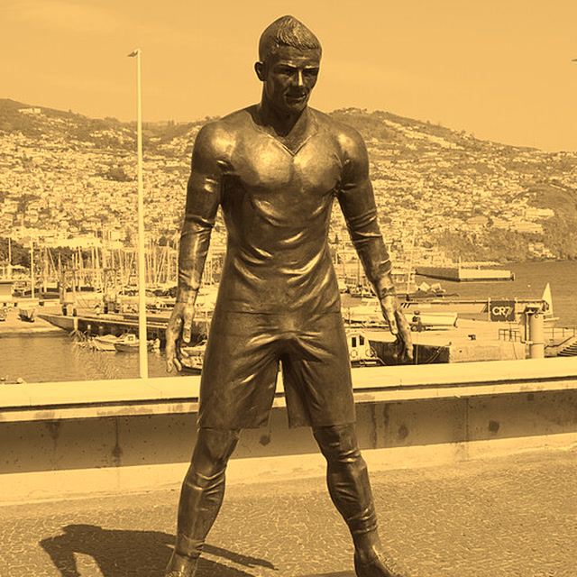

Nº1
que es el número 1
y por eso es el número 1
1
No, él sabe
DEPORTES · OPINIÓN
¿Cristiano Ronaldo piensa que es el número 1?
¿Cristiano Ronaldo piensa que es el número 1?
DEPORTES · OPINIÓN
¿Cristiano Ronaldo piensa que es el número 1?


piensa que es el
número 1
Cristiano Ronaldo